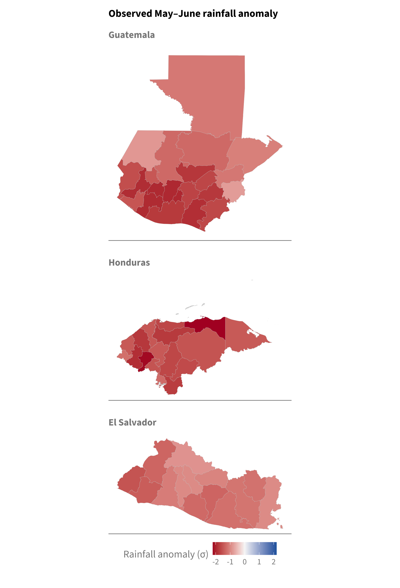
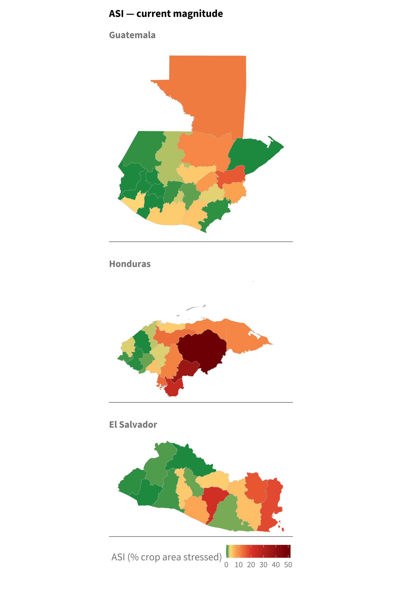
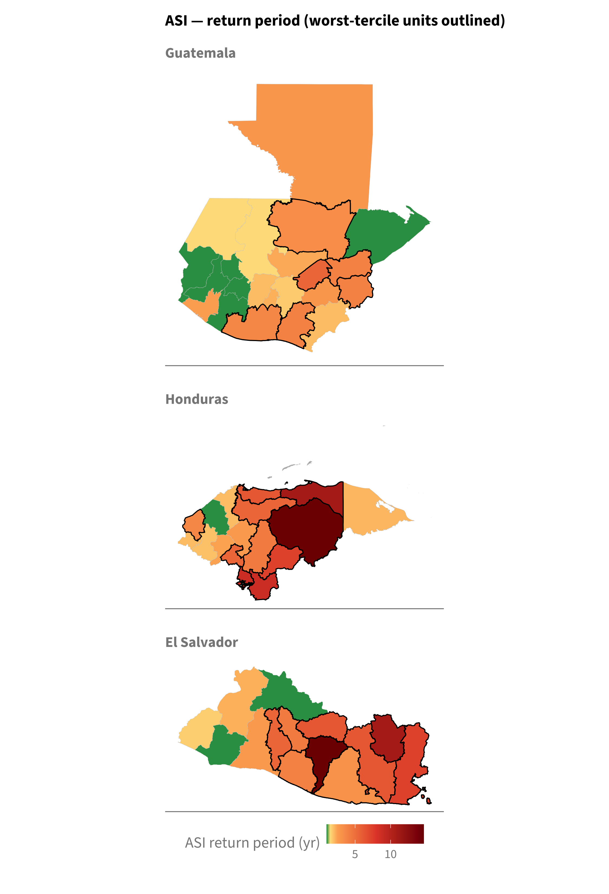
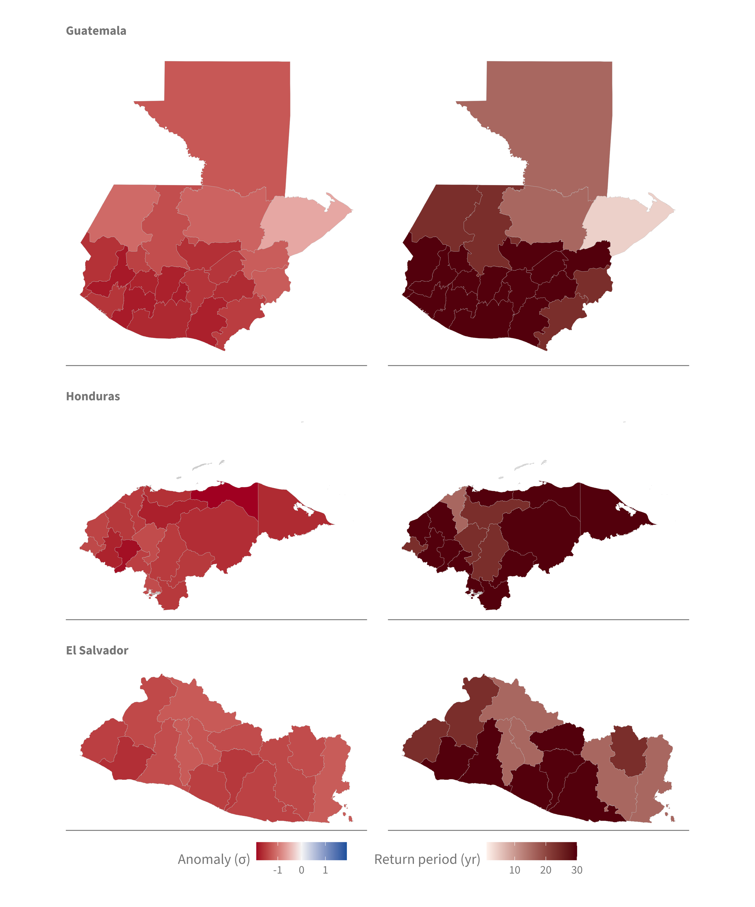
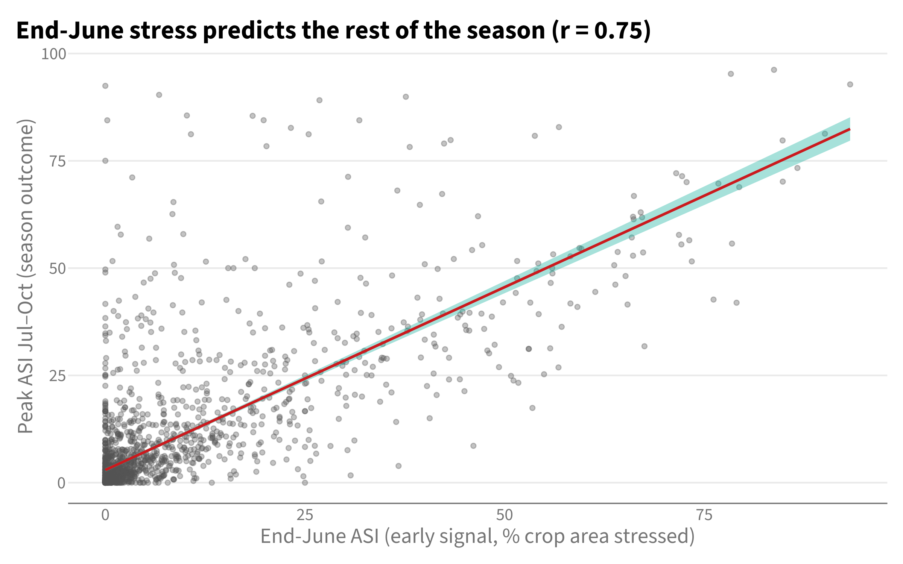
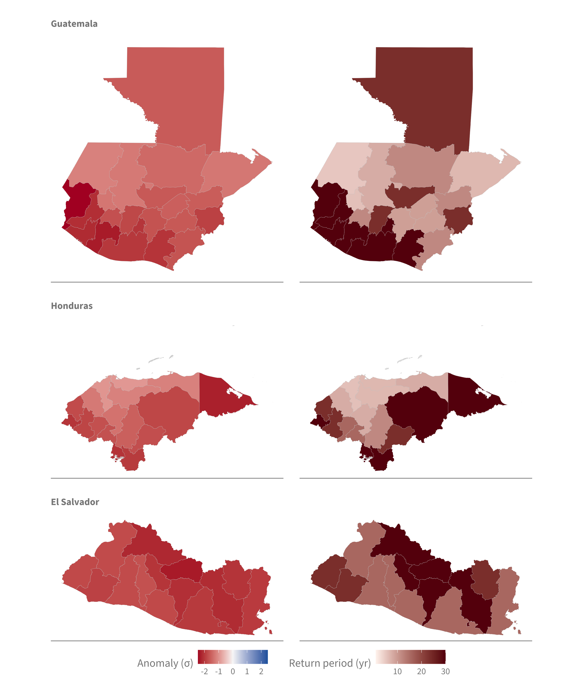
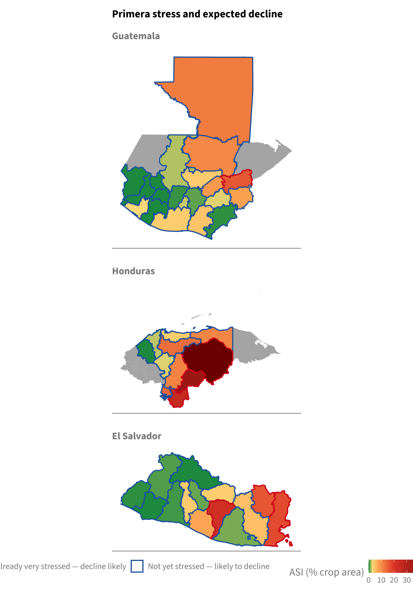
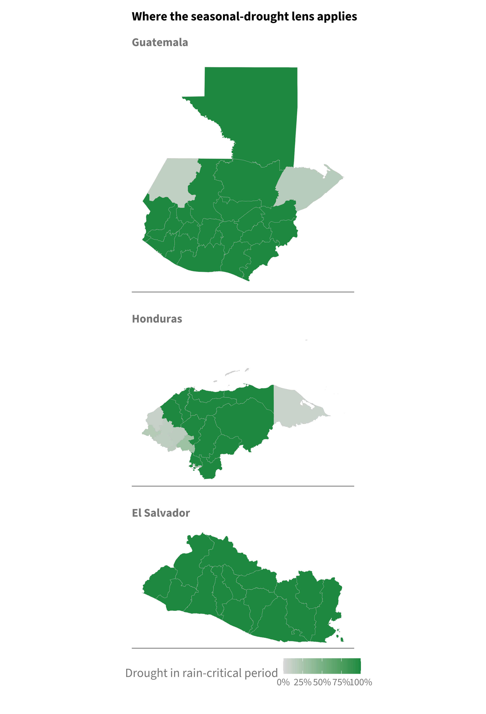
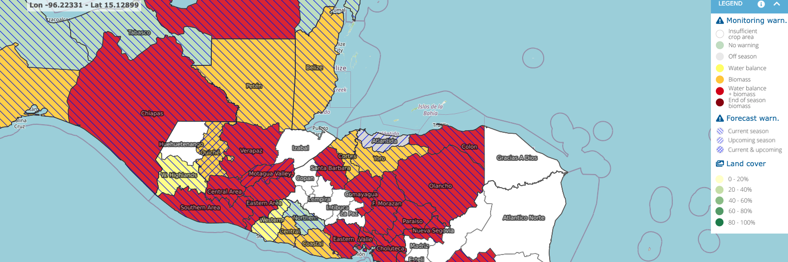

10 2026 Situation Summary
Purpose
This chapter summarizes CHD’s desk review for the July 2026 ROLAC missions to El Salvador, Honduras, and Guatemala. It sets out the evidence behind our recommendations on where and how to act. Supporting detail is in the companion chapter.
NoteBottom line
This analysis characterizes the drought and its agricultural impact to inform in-country, cross-agency planning. It is not intended to set operational priorities on its own.
Anticipatory Action for the 2026 primera was activated in March 2026 on the seasonal forecast. The severe, regional drought now developing indicates that the forecast identified the signal correctly and that the framework acted ahead of the impact now being observed.
- The drought is regional and largely undifferentiated. Rainfall is well below normal across nearly all admin-1 units in the three countries.
- Because the hazard is largely undifferentiated, the drought signal alone in this analysis is not a sound basis for ranking where to act. Prioritization is better anchored in operational capacity and local vulnerability, assembled by pooling in-country, cross-agency expertise.
- Crops are already stressed and the season is unlikely to recover. The postrera harvest is also likely to be affected, though that outlook is less certain.
- Seasonal timing constrains the options available. The primera is already underway, so the window for additional agricultural-based anticipatory action there has closed and mitigation is what remains, whereas the postrera retains lead time for anticipatory measures. Areas whose crops fall outside the primera and postrera calendar are better considered through a separate and additional vulnerability lens than the rest. These distinctions are offered to inform in-country decisions, not to prescribe them.
11 Current situation
11.1 Observed rainfall
Observed May–June rainfall (ERA5) was well below normal in every admin-1 unit of all three countries, with the largest deficits in Honduras and eastern Guatemala. The dryness is broad rather than confined to isolated pockets.
11.2 Agricultural stress
The FAO Agricultural Stress Index (ASI), the share of a unit’s crop area in severe stress, shows that impact is already occurring. Stress is concentrated in Honduras (Olancho 52%, El Paraíso 37%, Choluteca 25%) and eastern El Salvador (San Vicente 22%, La Unión 18%, Morazán 16%). Guatemala remains mostly low, with Zacapa (16%) the main exception.
The same stress can also be expressed as a return period, measured against each unit’s own 1984–2025 record. On that basis the current stress is rare in the most affected units, on the order of one in fifteen years in Olancho and San Vicente. The magnitude and return-period maps are shown together for comparison.


12 Primera recovery unlikely
12.1 Complete-season outlook (observed + forecast)
Combining the observed May–June rainfall with the July–August forecast gives the complete primera. On that basis the season remains a rare deficit across the region, and no unit shows a wet signal that would offset the current shortfall.

12.2 Early stress as a predictor
End-June stress is a leading indicator, not only a current reading. Across the 1984–2025 record, end-June ASI is correlated with the eventual season (r = 0.75), and a unit in its own worst tercile at end-June goes on to a worst-tercile season about 72% of the time, against a 33% base rate. Where crops are stressed now, the primera is therefore likely to fail.

12.3 Postrera also looks unfavourable
The September–November (postrera) forecast is also poor across the region, so the second harvest is unlikely to compensate for primera losses. Forecast skill for the postrera is weak, so this is best read as an outlook rather than a firm prediction.

12.4 All indicators by admin-1
The table below compiles the indicators for each admin-1 unit, grouped by country. Rainfall is given as percent of the 1991–2024 normal alongside its empirical return period, and agricultural stress as ASI alongside its return period. Cell colours follow the maps: rainfall from red (drier) through white to blue (wetter), return periods from pale to dark red, and ASI from green to red.
| Primera | Postrera | |||||||
|---|---|---|---|---|---|---|---|---|
| Obs rain (% norm) | Obs RP | Outlook (% norm) | Outlook RP | ASI % | ASI RP | Fcst (% norm) | Fcst RP | |
| El Salvador | ||||||||
| San Vicente | 65% | 12 | 57% | 47 | 22% | 15 | 71% | 47 |
| La Unión | 66% | 4 | 50% | 16 | 18% | 7 | 63% | 16 |
| Morazán | 69% | 6 | 55% | 24 | 16% | 11 | 62% | 24 |
| La Paz | 62% | 12 | 57% | 47 | 7% | 4 | 74% | 16 |
| San Miguel | 66% | 7 | 51% | 16 | 5% | 6 | 65% | 47 |
| San Salvador | 73% | 7 | 66% | 16 | 4% | 6 | 75% | 16 |
| Cabañas | 69% | 9 | 58% | 47 | 4% | 6 | 72% | 47 |
| Usulután | 64% | 8 | 50% | 47 | 1% | 3 | 71% | 16 |
| Cuscatlán | 72% | 9 | 64% | 16 | 1% | 4 | 73% | 47 |
| Santa Ana | 65% | 12 | 58% | 24 | 1% | 2 | 70% | 16 |
| La Libertad | 70% | 9 | 64% | 47 | 0% | 3 | 74% | 16 |
| Ahuachapán | 60% | 24 | 57% | 24 | 0% | 2 | 73% | 24 |
| Chalatenango | 74% | 6 | 63% | 16 | 0% | 1 | 73% | 47 |
| Sonsonate | 63% | 47 | 58% | 47 | 0% | 1 | 74% | 24 |
| Guatemala | ||||||||
| Zacapa | 76% | 16 | 77% | 47 | 16% | 4 | 81% | 12 |
| Petén | 74% | 9 | 73% | 16 | 12% | 3 | 84% | 24 |
| Alta Verapaz | 70% | 12 | 77% | 16 | 10% | 3 | 83% | 12 |
| El Progreso | 63% | 24 | 59% | 47 | 9% | 6 | 76% | 9 |
| Chiquimula | 82% | 5 | 69% | 24 | 8% | 4 | 76% | 24 |
| Santa Rosa | 54% | 47 | 51% | 47 | 5% | 4 | 71% | 47 |
| Baja Verapaz | 67% | 16 | 65% | 47 | 4% | 2 | 79% | 24 |
| Escuintla | 46% | 47 | 47% | 47 | 4% | 4 | 70% | 47 |
| Retalhuleu | 61% | 24 | 57% | 47 | 3% | 3 | 66% | 47 |
| Jalapa | 62% | 47 | 55% | 47 | 3% | 3 | 72% | 9 |
| Sacatepéquez | 59% | 47 | 51% | 47 | 2% | 2 | 71% | 47 |
| Quiché | 67% | 9 | 67% | 24 | 2% | 2 | 85% | 8 |
| Guatemala | 61% | 24 | 53% | 47 | 1% | 2 | 74% | 9 |
| Chimaltenango | 62% | 47 | 54% | 47 | 0% | 2 | 74% | 24 |
| Huehuetenango † | 79% | 4 | 71% | 24 | 0% | 2 | 88% | 5 |
| Jutiapa | 60% | 24 | 56% | 24 | 0% | 2 | 74% | 12 |
| Sololá | 68% | 24 | 60% | 47 | 0% | 1 | 77% | 12 |
| Totonicapán | 71% | 9 | 64% | 47 | 0% | 1 | 84% | 6 |
| Quetzaltenango | 69% | 47 | 64% | 47 | 0% | 1 | 78% | 47 |
| Suchitepéquez | 58% | 47 | 56% | 47 | 0% | 1 | 70% | 47 |
| San Marcos | 73% | 16 | 72% | 47 | 0% | 1 | 82% | 47 |
| Izabal † | 76% | 8 | 89% | 4 | 0% | 1 | 89% | 7 |
| Honduras | ||||||||
| Olancho | 63% | 24 | 70% | 47 | 52% | 15 | 75% | 47 |
| El Paraiso | 54% | 47 | 62% | 47 | 37% | 7 | 69% | 24 |
| Choluteca | 48% | 24 | 38% | 47 | 25% | 9 | 55% | 47 |
| Valle | 57% | 8 | 44% | 47 | 14% | 9 | 58% | 47 |
| Yoro | 66% | 16 | 70% | 24 | 14% | 6 | 85% | 7 |
| Francisco Morazan | 57% | 24 | 54% | 24 | 11% | 4 | 68% | 12 |
| Colon | 50% | 47 | 65% | 47 | 11% | 11 | 83% | 8 |
| Gracias a Dios † | 68% | 16 | 76% | 47 | 11% | 2 | 82% | 47 |
| La Paz † | 65% | 12 | 55% | 47 | 5% | 6 | 67% | 16 |
| Atlantida | 66% | 24 | 71% | 47 | 4% | 6 | 87% | 7 |
| Comayagua | 71% | 12 | 67% | 24 | 3% | 3 | 78% | 8 |
| Copan † | 73% | 16 | 74% | 47 | 3% | 4 | 82% | 24 |
| Cortes | 69% | 12 | 72% | 16 | 2% | 2 | 85% | 6 |
| Intibuca † | 61% | 47 | 56% | 47 | 1% | 2 | 73% | 16 |
| Ocotepeque † | 79% | 9 | 67% | 24 | 0% | 2 | 73% | 47 |
| Lempira † | 65% | 47 | 58% | 47 | 0% | 2 | 74% | 24 |
| Santa Barbara | 68% | 24 | 72% | 47 | 0% | 1 | 83% | 8 |
| Islas de La Bahia | 37% | 24 | 60% | 47 | — | — | 77% | 12 |
| † Off-calendar — the drought window falls outside the crop’s rain-critical period; the seasonal-drought lens does not apply, so these rows are set aside (read with caution). Blank ASI = no cropland (Islas de la Bahía). | ||||||||
13 Response by season
The distinctions below follow from the seasonal timing and are meant to inform in-country planning rather than to prescribe it.
13.1 Primera
Because the primera is already underway, the window for additional agricultural-based anticipatory action has closed and mitigation is the response that remains available. The map below shows current stress (ASI) and outlines two groups: units already very stressed, where continued decline is likely, and units not yet stressed but likely to decline given the dry outlook. Grey units have no ASI or fall off the seasonal calendar.

13.2 Postrera
Because the postrera has not yet started, lead time remains for anticipatory measures, independent of whether the AA framework was triggered earlier this season. Forecast skill is weak, so this supports acting ahead of an elevated but uncertain risk rather than a firm prediction of failure. The postrera outlook is described in Section 12.3 and mapped in Figure 12.3.
13.3 Areas off the seasonal calendar
A small number of units fall outside the drought’s rain-critical calendar. In the western highlands and along the Caribbean fringe, the crop’s precipitation-sensitive period (ASAP PSP) does not coincide with the primera and postrera windows. A seasonal-rainfall deficit is not the relevant measure of risk in these areas; they are better addressed through vulnerability and food-security assessment than through agricultural drought response. That layer has not yet been built here.

14 External validation: FAO/JRC ASAP
The Anomaly Hot Spots of Agricultural Production (ASAP) system, run by FAO and the EC Joint Research Centre, provides an independent check on the assessment above. ASAP combines vegetation health, biomass, and a crop water-balance model over cropland, and issues monitoring and forecast warnings by agro-climatic zone. Its warning for the third dekad of June 2026, the same window as this analysis, is shown below. Because it comes from a different institution and a different method, agreement carries weight.

ASAP corroborates the analysis on each of its main points.
- Regional severity. The most severe class, a combined water-balance and biomass warning, covers the dry corridor almost continuously across the three countries. This matches the region-wide rainfall deficit and the concentration of agricultural stress reported here.
- Hotspot geography. ASAP’s strongest warnings fall in central and southern Honduras, the eastern-Guatemala Motagua valley, and El Salvador, the same areas identified by ASI (Olancho, El Paraíso, Choluteca, Zacapa, and eastern El Salvador).
- Current and upcoming season. ASAP issues forecast warnings for both the current and the upcoming season across much of the region. This independently supports the two conclusions drawn here: that the primera is unlikely to recover, and that the postrera outlook is also unfavourable. The latter is the point that rests on a lower-skill forecast in our own analysis, so the independent agreement is useful.
- Cropland extent. ASAP marks the Caribbean northeast, including Gracias a Dios, as insufficient crop area, consistent with the units set aside here as off-calendar or non-agricultural.
The two products use different spatial units and different warning categories, so the comparison is close rather than unit-for-unit. Within those limits, an independent operational system reaches the same regional assessment.
Definitions and caveats
- ASI: the percentage of a unit’s crop area in severe drought stress (FAO; absolute and comparable across units). “Already very stressed” refers to ASI of 15% or more.
- Percent of normal: seasonal rainfall as a share of the 1991–2024 mean; values below 100 are drier than normal.
- Return period: the empirical recurrence interval of the 2026 value against the unit’s own record (Weibull), in years.
- Baselines: rainfall anomalies and percent of normal are computed against the 1991–2024 climatology — ERA5 for the observed and combined primera, and the SEAS5 July-issuance reforecast (1991–2024 hindcast) for the postrera forecast. Rainfall return periods are empirical Weibull ranks over the full available ERA5/SEAS5 series. ASI percentiles and return periods are taken against each unit’s own 1984–2025 FAO ASI record.
- Confidence: the primera rests on observed conditions and is high confidence; the postrera rests on a low-skill SEAS5 forecast, which supports anticipatory action but not a firm prediction.
- Off-calendar: the drought window falls outside the crop’s rain-critical period (ASAP PSP). These units are better served by a vulnerability and food-security assessment than a seasonal-drought one.
- The vulnerability and food-security layer for the off-calendar areas has not yet been built.